![TEAMMATES[Logo] - Online Feedback Management System for Education](images/teammateslogo.jpg)
Aquí es una visión general de algunas características notables de TEAMMATES. La página de ayuda
contiene mas detalles acerca de como usar estas características.
Team peer evaluaciones
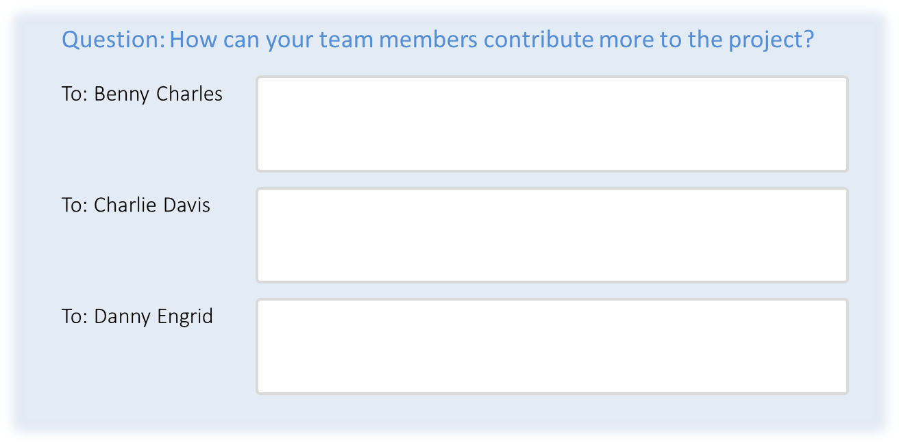
Los estudiantes pueden dar peer evaluaciones confidenciales para usted tambien.
Trayectoria flexible feedback
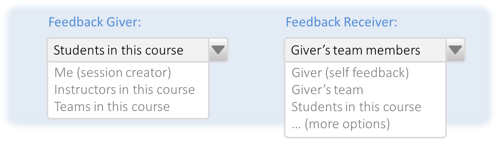Algunos ejemplos:
a) feedback entre equipos
b) de instructores para estudiantes
c) de cada estudiante a otro arbol de otros estudiantes
Control de poder de visibilidad
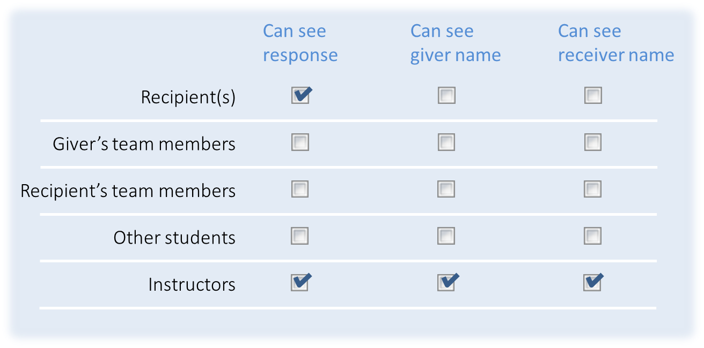(i) texto de respuesta,
(ii) la identidad de un dotatne del feedback, y
(iii) la identidad del receptor del feedback.
Reporte y estadisticas
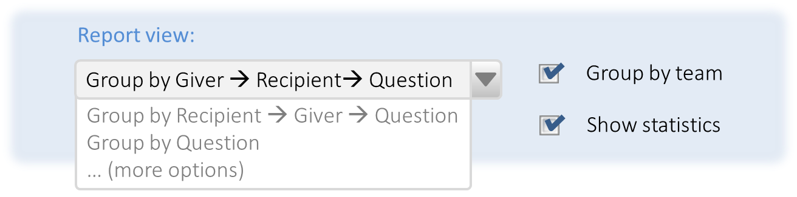Ejem. grupo por equipo, donante del feedback.
Algunas estadisticas también para respuestas que estan disponibles
Acceso de control de grano fino
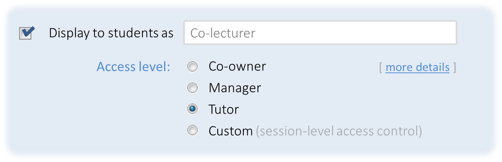Si requiere, aún puede establecer que sesiones de estudiantes son accesibles para un instructor particular.
Diferentes tipos de preguntas
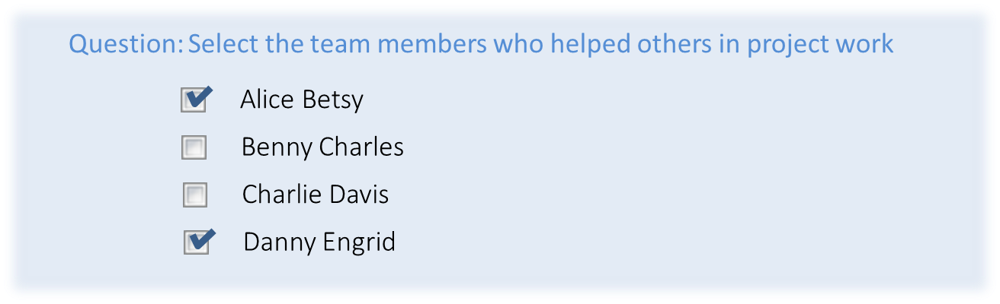Usted aún puede generar opciones MCQ de nombres de estudiantes, como las ilustraciones en los ejemplos de arriba.
Reutilizar las preguntas pasadas
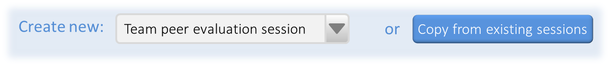TEAMMATES también promueve algunas plantillas de sesión para elegir.
No requiere inscripción para estudiantes
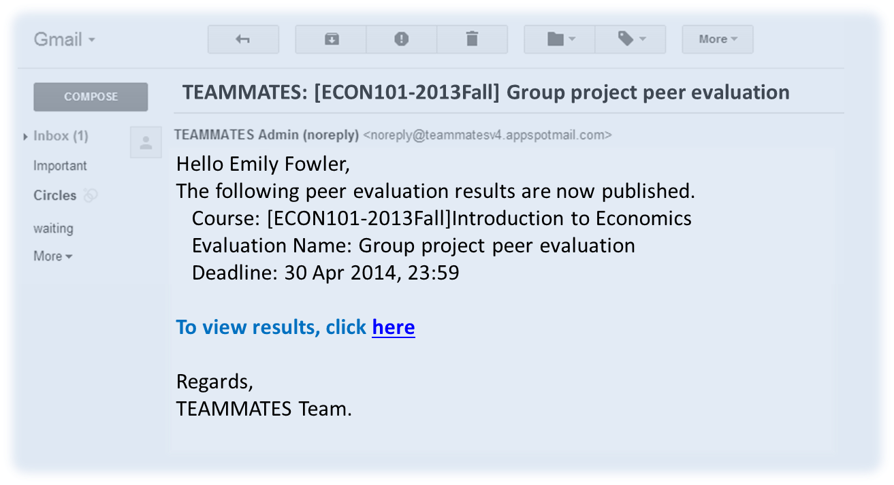Si ellos inician TEAMMATES usando su cuenta de Google (opcional), ellos pueden acceder a todos los cursos de TEAMMATES en una pagina y acceder aún a más funciones tales como ajuste de perfil.
Dato Descargable
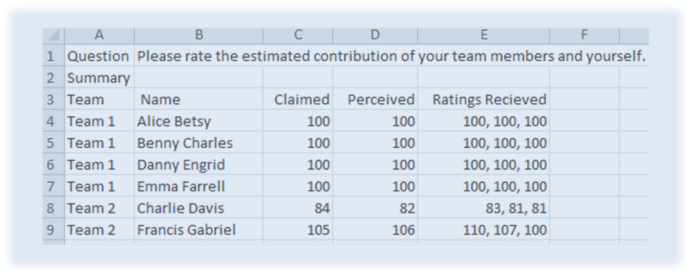La colección de dato que le pertenece a usted, puede eliminar sus datos de TEAMMATES en cualquier momento.
Comentarios Compartibles
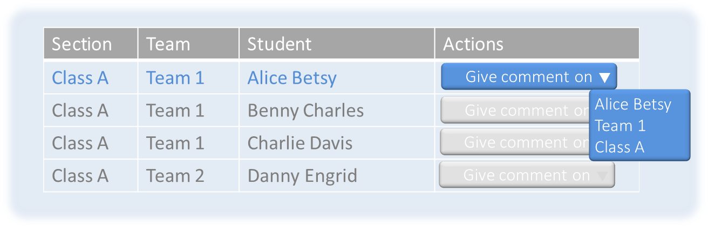Control d visibilidad de grano fino, esta disponible también para los comentarios. Por ejemplo, usted puede dar un comentario a un estudiante que a comment to a student that el estudiante receptor puede ver mientras otros estudiantes en el curso puede solo mirar el comentario de texto pero no puede ver el nombre del destinatario.
Perfiles de Estudiantes
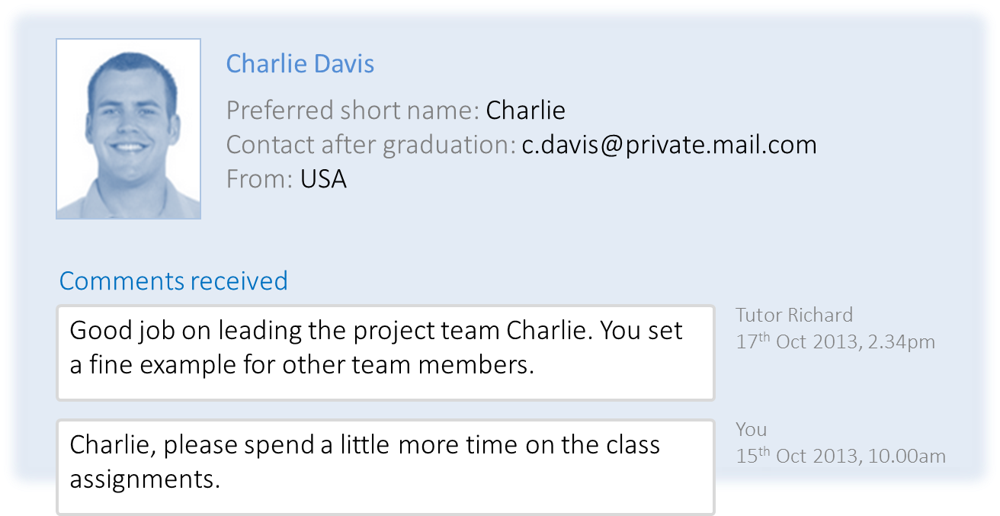Usted puede acceder a todos los datos acerca de un estudiante en una página, con tan solo escribir una parte
del nombre del estudiante en nuestro cuadro de búsqueda. En una sola página puede ver
* Perfil del Estudiante
* Todo feedback dado ó recibido por el estudiante
* Todos los comentarios recibidos por el estudiante
Busqueda Potente
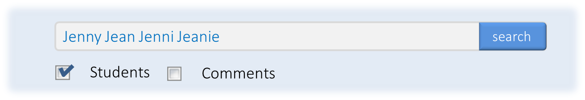Dado arriba es un ejemplo de busqueda para un estudiante, quien su nombre usted no esta muy seguro.
Soporte para cursos grandes
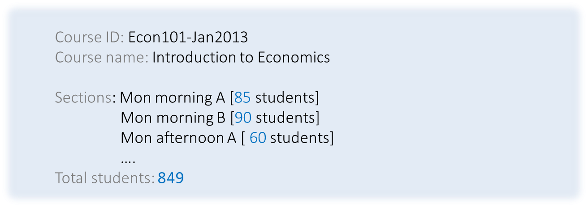Para más detalles acerca de estas caracteristicas, visitar la página de Ayuda de Instructor ó envienos un correo.